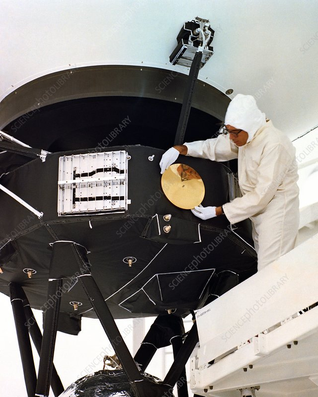
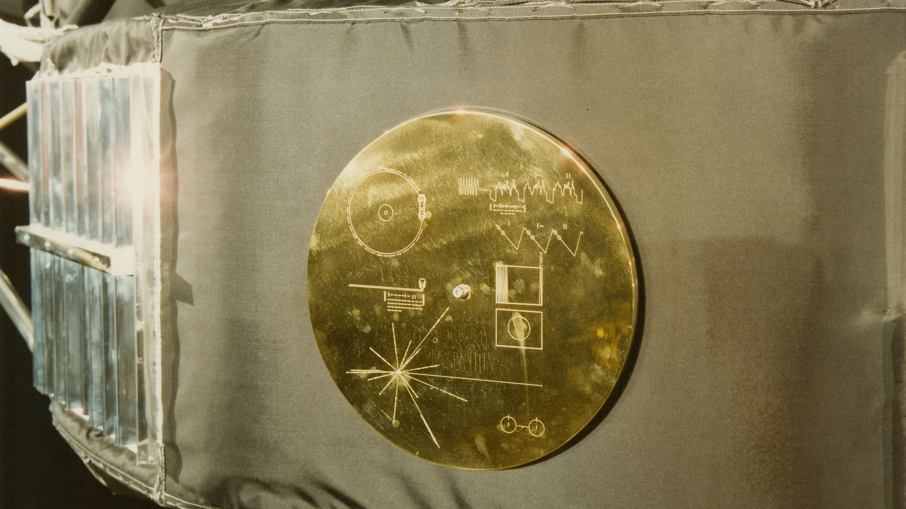

In 1977, NASA launched the Voyager 1 space probe to study the outer solar system.
On this spacecraft, they attached a 12-inch gold plated record, intended for any intelligent extraterrestrial life form who may find it.


Voyager 1 is the first man-made object to reach interstellar space. It left our Solar System in August 2012.
At the time that you’re reading this, below are Voyager 1's exact co-ordinates:
Can you find the Golden Record disk? Interact with this visualiser to see if you can find it!